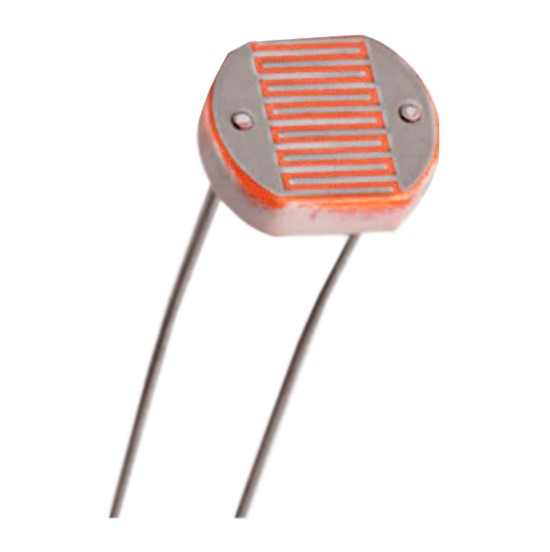
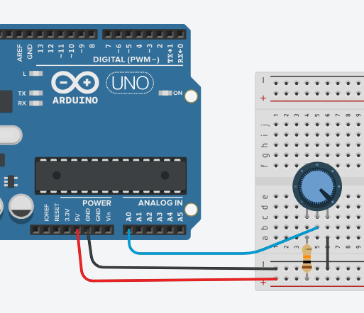

Entradas Analógicas en S4A
Una entrada analógica en Arduino Uno es un pin (A0-A5) que puede medir un rango de voltajes continuos, desde 0V hasta 5V, y convertirlos en valores digitales entre 0 y 1023. Estos pines se utilizan para leer señales de sensores que miden magnitudes variables, como temperatura, luz o sonido.

Veremos algunos ejemplos de entradas analógicas con el sensor LDR y el potenciómetro.
I. LDR (Light Dependent Resistor):
Una LDR o resistencia dependiente de la luz también conocida como fotoresistencia, fotocélula, o fotoconductor, es un tipo de resistencia cuya resistencia varía dependiendo de la cantidad de luz que cae sobre su superficie. Cuando la luz cae sobre la resistencia, entonces la resistencia cambia. Por lo tanto, son dispositivos sensibles a la luz.
Ejercicio N° 1: Control del LED integrado a través de una LDR
Crear un programa que permita encender el LED integrado (Pin 13) a través de un sensor LDR. De manera que, si el sensor recibe luz, el LED esté apagado, pero si el sensor deja de percibir luz, el LED se encienda.
El Circuito:

El Programa:

Desafío: Conectar un LED al pin 10 que se encienda o apague dependiendo de la cantidad de luz que recibe la LDR.
II. Potenciómetro:
Es un resistor variable manual que se utiliza como un sensor de entrada analógica para controlar valores en un circuito. Permite modificar el voltaje o la resistencia de manera continua girando una perilla, lo que Arduino interpreta como un valor numérico entre 0 y 1023 para enviar a los pines analógicos.

Ejercicio N° 2: Control de LED integrado a través de un potenciómetro
Crear un programa que permita encender el LED integrado (Pin 13) a través de un potenciómetro. De manera que, al girar la perilla, el LED se encienda o apague.
El Circuito:
El Programa:
Puedes utilizar el mismo programa realizado en el ejercicio anterior.
Mejora: Conectar un LED al pin 9 que se encienda gradualmente al girar la perilla del potenciómetro.